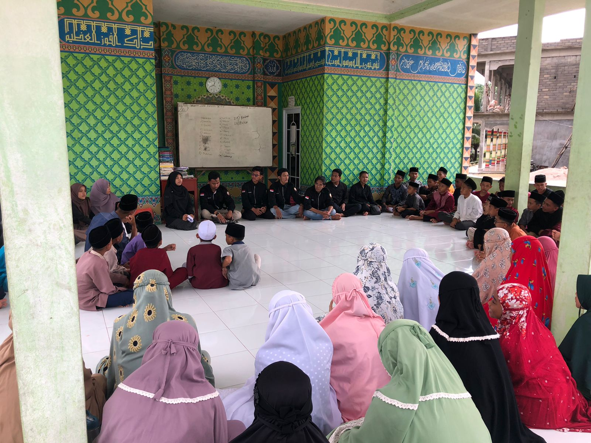

Memperingati Hari Anak Nasional, HIMK Adakan Kunjungan Kasih
Program Kerja HIMK
Himpunan Mahasiswa Kundur (HIMK) melaksanakan program kerja bidang keagamaan dalam rangka memperingati Hari Anak Nasional yaitu kunjungan kasih di Panti Asuhan Wakaf Mata Hati pada hari Minggu (24/07/2022). Kegiatan ini diikuti secara antusias oleh adik-adik panti asuhan.
Dalam kegiatan ini, HIMK memberikan edukasi terkait pembuatan pantun, puisi, dan cerpen, yang juga diperlombakan bagi adik-adik di panti asuhan tersebut. Selain itu, kegiatan ini dilakukan untuk memberikan motivasi kepada adik-adik di Panti Asuhan Wakaf Mata Hati agar terus semangat dalam belajar dan mencapai cita-cita yang diimpikan.
Penggalangan Dana
Sehari sebelum melakukan kunjungan kasih, yaitu pada tanggal 23 Juli 2022, berkenaan dengan peringatan Hari Anak Nasional, Himpunan Mahasiswa Kundur (HIMK) Tanjungpinang-Bintan mengadakan penggalangan dana di sekitar Tugu Kapal Tanjungbatu Kota. Hasil dari donasi tersebut berjumlah Rp. 3.950.000, yang disalurkan dalam bentuk sembako dan alat tulis untuk keperluan sehari-hari dan menunjang kebutuhan pendidikan anak-anak di Panti Asuhan Mata Hati.
"Uang hasil donasi ini juga kami berikan dalam bentuk hadiah untuk adik-adik yang mengikuti perlombaan dan kegiatan edukasi yang kami lakukan," sambung M. Teo Renaldi selaku ketua pelaksana kegiatan.
Ucapan Terima Kasih
"Terima kasih kepada Himpunan Mahasiswa Kundur yang berkuliah di Tanjungpinang-Bintan yang telah berkunjung untuk kedua kalinya, yang sebelumnya pernah dilakukan pada 2 tahun yang lalu. Semoga dengan kegiatan ini para santriwan dan santriwati bisa lebih semangat lagi dalam berkarya," ucap Abdul Azis selaku pengajar dan pengasuh di Panti Asuhan Wakaf Mata Hati.
Harapan untuk Masa Depan
"Melalui kegiatan ini kami harapkan bisa menjadi pendorong untuk Pemerintah Kabupaten Karimun dan khususnya Kecamatan Kundur untuk lebih serius dalam memberdayakan anak-anak kurang mampu yang masih harus menempuh pendidikan di bangku sekolah SD, SMP, SMA maupun bagi yang melanjutkan pendidikan di tingkat Universitas," ujar Muhammad Nurdin Andika selaku wakil ketua umum Himpunan Mahasiswa Kundur (HIMK) Tanjungpinang-Bintan.